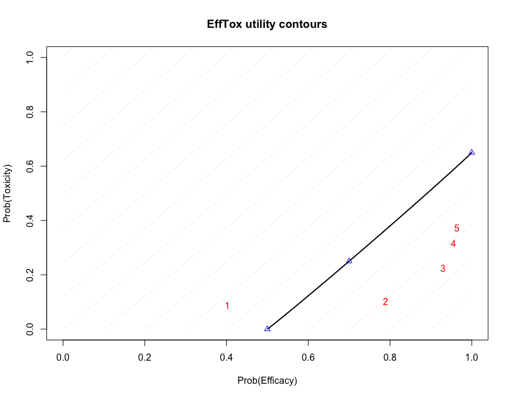

trialr
trialr is a collection of Bayesian clinical trial designs implemented in Stan and R. The documentation is available at https://brockk.github.io/trialr/
There are many notable Bayesian designs and methods for clinical trials. However, one of the factors that has constrained their use is the availability of software. We present here some of the most popular, implemented and demonstrated in a consistent style, leveraging the powerful Stan environment for Bayesian computing.
Implementations exist in other R packages. Sometimes authors make available code with their publications. However, challenges to use still persist. Different methods are presented in disparate styles. Features implemented in one package for one design may be missing in another. Sometimes the technology chosen may only be available on a particular operating system, or the chosen technology may have fallen into disuse.
trialr seeks to address these problems. Models are specified in Stan, a state-of-the-art environment for Bayesian analysis. It uses Hamiltonian Monte Carlo to take samples from the posterior distribution. This method is more efficient than Gibbs sampling and reliable inference can usually be performed on a few thousand posterior samples. R, Stan and trialr are each available on Mac, Linux, and Windows, so all of the examples presented here work on each operating system. Furthermore, Stan offers a very simple method to split the sampling across n cores, taking full advantage of the modern multicore processors.
The designs implemented in trialr are introduced briefly below, and developed more fully in vignettes. We focus on real-life usage, including:
- fitting models to observed data;
- processing posterior samples using tidy principles to produce useful inferences;
- and visualising inferences using modern
ggplotgraphics.
Examples
In all examples, we will need to load trialr
library(trialr)
CRM
The Continual Reassessment Method (CRM) was first published by O’Quigley, Pepe, and Fisher (1990). It assumes a smooth mathematical form for the dose-toxicity curve to conduct a dose-finding trial seeking a maximum tolerable dose. There are many variations to suit different clinical scenarios and the design has enjoyed relatively common use, although nowhere near as common as the ubiquitous and inferior 3+3 design.
We will demonstrate the method using a notional trial example. In a scenario of five doses, we seek the dose with probability of toxicity closest to 25% where our prior guesses of the rates of toxicity can be represented:
target <- 0.25 skeleton <- c(0.05, 0.15, 0.25, 0.4, 0.6)
Let us assume that we have already treated 2 patients each at doses 2, 3 and 4, having seen two toxicities at dose-level 4 and none elsewhere. What dose should we give to the next patient or cohort? We fit the data to the popular empiric variant of the CRM model:
fit1 <- stan_crm(outcome_str = '2NN 3NN 4TT', skeleton = skeleton, target = target, model = 'empiric', beta_sd = sqrt(1.34), seed = 123)
The parameter outcome_str = '2NN 3NN 4TT' reflects that two patients each have been treated at doses 2, 3, and 4, and that the two patients at dose 4 had toxicity but the other patients did not.
The fitted model contains lots of useful of information:
fit1 #> Patient Dose Toxicity Weight #> 1 1 2 0 1 #> 2 2 2 0 1 #> 3 3 3 0 1 #> 4 4 3 0 1 #> 5 5 4 1 1 #> 6 6 4 1 1 #> #> Dose Skeleton N Tox ProbTox MedianProbTox ProbMTD #> 1 1 0.05 0 0 0.108 0.0726 0.2140 #> 2 2 0.15 2 0 0.216 0.1900 0.2717 #> 3 3 0.25 2 0 0.310 0.2972 0.2657 #> 4 4 0.40 2 2 0.444 0.4484 0.2090 #> 5 5 0.60 0 0 0.624 0.6395 0.0395 #> #> The model targets a toxicity level of 0.25. #> The dose with estimated toxicity probability closest to target is 2. #> The dose most likely to be the MTD is 2. #> Model entropy: 1.49
library(ggplot2) library(tidybayes) library(dplyr) fit1 %>% spread_draws(prob_tox[Dose]) %>% ggplot(aes(x = Dose, y = prob_tox)) + stat_interval(.width = c(.5, .8, .95)) + scale_color_brewer() + labs(y = 'Prob(DLT)', title = 'Posterior dose-toxicity beliefs using empiric CRM')

Several variants of the CRM are implemented in ‘trialr’. These are demonstrated in the CRM vignette. Several visualisation techniques are illustrated in the Visualisation in CRM vignette. The time-to-event CRM is introduced in the TITE-CRM vignette.
Neuenschwander, Branson & Gsponer
Neuenschwander, Branson, and Gsponer (2008) introduced a two-parameter logistic model for dose-escalation. It shares many characteristics of the CRM models presented above but instead of a skeleton, it uses as a covariate the doses under investigation divided by some reference dose.
E.g., reproducing one of the analyses in their paper:
dose <- c(1, 2.5, 5, 10, 15, 20, 25, 30, 40, 50, 75, 100, 150, 200, 250) d_star <- 250 target <- 0.30 outcomes <- '1NNN 2NNNN 3NNNN 4NNNN 7TT' fit <- stan_nbg(outcome_str = outcomes, real_doses = dose, d_star = d_star, target = target, alpha_mean = 2.15, alpha_sd = 0.84, beta_mean = 0.52, beta_sd = 0.8, seed = 2020, refresh = 0) fit #> Patient Dose Toxicity Weight #> 1 1 1 0 1 #> 2 2 1 0 1 #> 3 3 1 0 1 #> 4 4 2 0 1 #> 5 5 2 0 1 #> 6 6 2 0 1 #> 7 7 2 0 1 #> 8 8 3 0 1 #> 9 9 3 0 1 #> 10 10 3 0 1 #> 11 11 3 0 1 #> 12 12 4 0 1 #> 13 13 4 0 1 #> 14 14 4 0 1 #> 15 15 4 0 1 #> 16 16 7 1 1 #> 17 17 7 1 1 #> #> Dose N Tox ProbTox MedianProbTox ProbMTD #> 1 1 3 0 0.0126 0.00563 0.00025 #> 2 2 4 0 0.0325 0.01967 0.00050 #> 3 3 4 0 0.0675 0.04934 0.02250 #> 4 4 4 0 0.1385 0.11863 0.10450 #> 5 5 0 0 0.2064 0.18937 0.16775 #> 6 6 0 0 0.2692 0.25641 0.17100 #> 7 7 2 2 0.3264 0.31878 0.14425 #> 8 8 0 0 0.3780 0.37409 0.16850 #> 9 9 0 0 0.4661 0.46884 0.12475 #> 10 10 0 0 0.5371 0.54698 0.07125 #> 11 11 0 0 0.6616 0.67700 0.02000 #> 12 12 0 0 0.7390 0.75753 0.00375 #> 13 13 0 0 0.8259 0.84691 0.00075 #> 14 14 0 0 0.8717 0.89297 0.00025 #> 15 15 0 0 0.8993 0.91986 0.00000 #> #> The model targets a toxicity level of 0.3. #> The dose with estimated toxicity probability closest to target is 7. #> The dose most likely to be the MTD is 6. #> Model entropy: 2.06
This reproduces the inferences depicted in the lower right pane of Figure 1 in Neuenschwander, Branson, and Gsponer (2008).
For more, see the Two-parameter logistic model for dose-finding by Neuenschwander, Branson & Gsponer vignette.
EffTox
EffTox by Thall and Cook (2004) is a dose-finding design that uses binary efficacy and toxicity outcomes to select a dose with a high utility score. We present it briefly here but there is a much more thorough examination in the EffTox vignette.
For demonstration, we fit the model parameterisation introduced by Thall et al. (2014) to the following notional outcomes:
| Patient | Dose-level | Toxicity | Efficacy |
|---|---|---|---|
| 1 | 1 | 0 | 0 |
| 2 | 1 | 0 | 0 |
| 3 | 1 | 0 | 1 |
| 4 | 2 | 0 | 1 |
| 5 | 2 | 0 | 1 |
| 6 | 2 | 1 | 1 |
outcomes <- '1NNE 2EEB' fit2 <- stan_efftox_demo(outcomes, seed = 123)
In an efficacy and toxicity dose-finding scenario, the number of patient outcomes has increased. It is possible that patients experience efficacy only (E), toxicity only (T), both (B) or neither (N).
fit2 #> Patient Dose Toxicity Efficacy #> 1 1 1 0 0 #> 2 2 1 0 0 #> 3 3 1 0 1 #> 4 4 2 0 1 #> 5 5 2 0 1 #> 6 6 2 1 1 #> #> Dose N ProbEff ProbTox ProbAccEff ProbAccTox Utility Acceptable ProbOBD #> 1 1 3 0.402 0.088 0.333 0.927 -0.342 TRUE 0.0465 #> 2 2 3 0.789 0.103 0.943 0.921 0.412 TRUE 0.2625 #> 3 3 0 0.929 0.225 0.984 0.718 0.506 TRUE 0.2077 #> 4 4 0 0.955 0.315 0.983 0.617 0.420 FALSE 0.0620 #> 5 5 0 0.964 0.372 0.980 0.561 0.349 FALSE 0.4213 #> #> The model recommends selecting dose-level 3. #> The dose most likely to be the OBD is 5. #> Model entropy: 1.36
In this example, after evaluation of our six patients, the dose advocated for the next group is dose-level 3. This is contained in the fitted object:
fit2$recommended_dose #> [1] 3
This is not surprising because dose 3 has the highest utility score:
fit2$utility #> [1] -0.3418428 0.4120858 0.5064312 0.4199298 0.3493254
Sometimes, doses other than the maximal-utility dose will be recommended because of the dose-admissibility rules. See the EffTox vignette and the original papers for more details.
Functions are provided to create useful plots. For instance, it is illuminating to plot the posterior means of the probabilities of efficacy and toxicity at each of the doses on the trade-off contours used to measure dose attractiveness. The five doses are shown in red. Doses closer to the lower-right corner have higher utility.
efftox_contour_plot(fit2) title('EffTox utility contours')

This example continues in the EffTox vignette. There are many publications related to EffTox, including Thall and Cook (2004) and Thall et al. (2014).
BEBOP in PePS2
Thall, Nguyen, and Estey (2008) introduced an extension of EffTox that allows dose-finding by efficacy and toxicity outcomes and adjusts for covariate information. Brock, et al. (manuscript accepted but not yet in press) simplified the method by removing the dose-finding components to leave a design that studies associated co-primary and toxicity outcomes in an arbitrary number of cohorts determined by the basline covariates. They refered to the simplifed design as BEBOP, for Bayesian Evaluation of Bivariate binary Outcomes with Predictive variables.
The investigators implement the design is a phase II trial of pembrolizumab in non-small-cell lung cancer. A distinct feature of the trial is the availability of predictive baseline covariates, the most noteworthy of which is the PD-L1 tumour proportion score, shown by Garon et al. (2015) to be a predictive biomarker for drug efficacy.
This example is demonstrated in the BEBOP vignette.
Installation
You can install the latest trialr commit from github with:
# install.packages("devtools") devtools::install_github("brockk/trialr")
You can install the latest CRAN release by running:
install.packages("trialr")
It should go without saying that the CRAN release will be older than the github version.
Extending trialr and getting in touch
If there is a published Bayesian design you want implemented in Stan, get in touch. Contact brockk on github.
References
Garon, Edward B, Naiyer a Rizvi, Rina Hui, Natasha Leighl, Ani S Balmanoukian, Joseph Paul Eder, Amita Patnaik, et al. 2015. “Pembrolizumab for the Treatment of Non-Small-Cell Lung Cancer.” The New England Journal of Medicine 372 (21): 2018–28. https://doi.org/10.1056/NEJMoa1501824.
Neuenschwander, Beat, Michael Branson, and Thomas Gsponer. 2008. “Critical Aspects of the Bayesian Approach to Phase I Cancer Trials.” Statistics in Medicine 27 (13): 2420–39. https://doi.org/10.1002/sim.3230.
O’Quigley, J, M Pepe, and L Fisher. 1990. “Continual Reassessment Method: A Practical Design for Phase 1 Clinical Trials in Cancer.” Biometrics 46 (1): 33–48. https://doi.org/10.2307/2531628.
Thall, Peter F., Hoang Q. Nguyen, and Elihu H. Estey. 2008. “Patient-Specific Dose Finding Based on Bivariate Outcomes and Covariates.” Biometrics 64 (4): 1126–36. https://doi.org/10.1111/j.1541-0420.2008.01009.x.
Thall, Peter F., J. Kyle Wathen, B. Nebiyou Bekele, Richard E. Champlin, Laurence H. Baker, and Robert S. Benjamin. 2003. “Hierarchical Bayesian Approaches to Phase II Trials in Diseases with Multiple Subtypes.” Statistics in Medicine 22 (5): 763–80. https://doi.org/10.1002/sim.1399.
Thall, PF, and JD Cook. 2004. “Dose-Finding Based on Efficacy-Toxicity Trade-Offs.” Biometrics 60 (3): 684–93.
Thall, PF, RC Herrick, HQ Nguyen, JJ Venier, and JC Norris. 2014. “Effective Sample Size for Computing Prior Hyperparameters in Bayesian Phase I-II Dose-Finding.” Clinical Trials 11 (6): 657–66. https://doi.org/10.1177/1740774514547397.